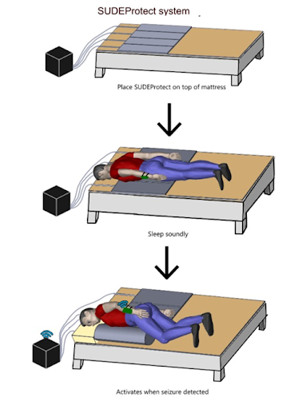

Biomedical Engineering Student, SFU
I study biomedical engineering at Simon Fraser University. My work spans embedded systems, imaging, signal processing, and electromechanical prototyping. I focus on building hardware and software that solve clear clinical problems.
A multimodal detection and intervention platform reducing nighttime SUDEP risk. I integrated embedded systems, control logic, and pneumatic actuation to reposition patients safely.
LQR and pole-placement controllers for the Quanser QUBE-Servo 3 using MATLAB and Simulink.
Tumor segmentation using CLAHE preprocessing, adaptive thresholds, and connected-component logic.
Quality control, instrumentation troubleshooting, grout-flow monitoring, TBM maintenance support, and daily reporting.